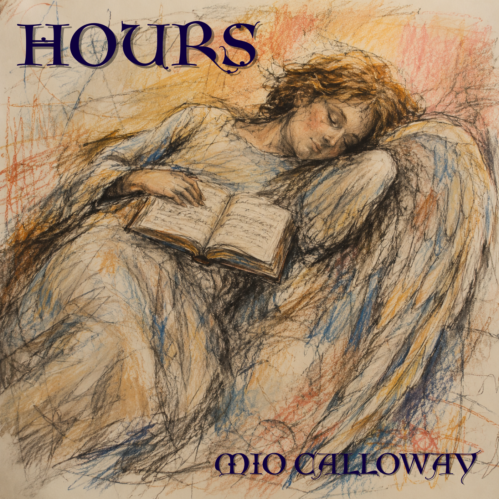

MIO CALLOWAY
born of afternoon light & borrowed languages
窓際のカフェ、午後の光、
ちょっと遠い国の空気。
そういうものに似た音楽をつくっています。
Mini Album
Hours
朝、昼、夕方、夜。一日の光を、4つの音にして。

Hours
-
1
Sunday朝 F major / 84 bpm
-
2
ぽこあぽこ架空のアプリ「ぽこあぽこ」のために書いた曲昼下がり 76 bpm
-
3
Five PM夕方 G major / 72 bpm
-
4
窓辺の月夜 A minor / 62 bpm
the hours fold away
昼のわたしが、知らない夜のこと。
Side B
-
Side B
"the hours fold away" — Hours への、見えない折り返し。